Region 10
769 ft² at (-0.21, 0.48, 0.53) ft. Confirm whether this is the occupied lower gallery. Identify the stair or ramp landing in this footprint. No approach was detected here.
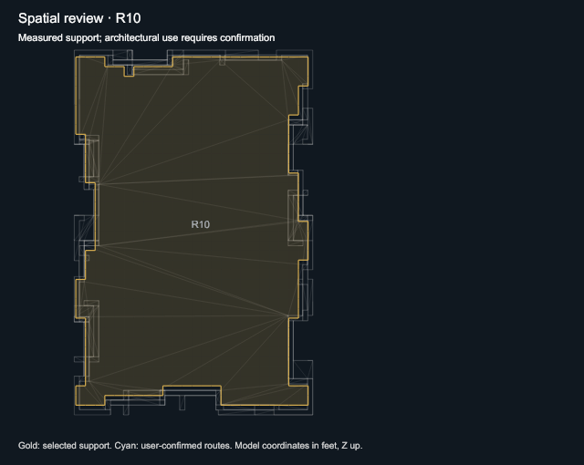
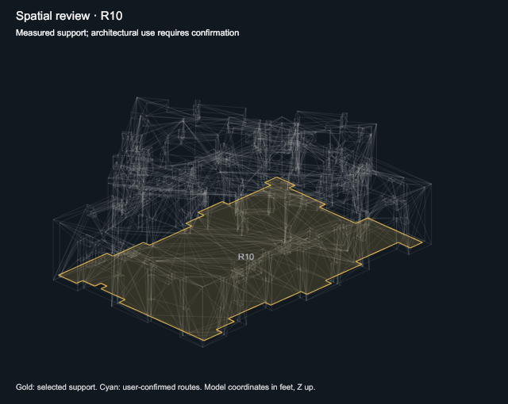
All coordinates use feet and Z up. Gold marks the selected floor samples. These models need an architectural review before the 40/40/20 calculation can identify a primary destination.
769 ft² at (-0.21, 0.48, 0.53) ft. Confirm whether this is the occupied lower gallery. Identify the stair or ramp landing in this footprint. No approach was detected here.


423 ft² at (0.59, -0.38, 10.00) ft. Confirm the occupied upper gallery extent, clear width and representative headroom. Review the openings to R9, R54 and R16. The lowest sampled clearance is 5.41 ft.
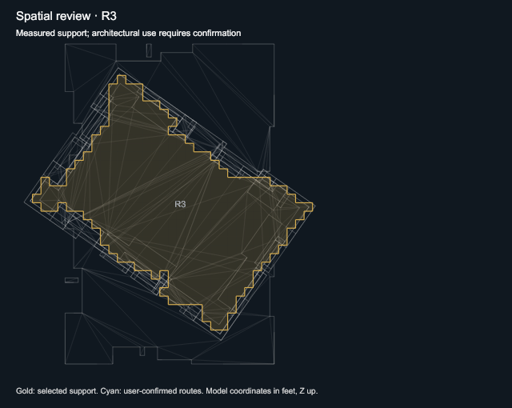
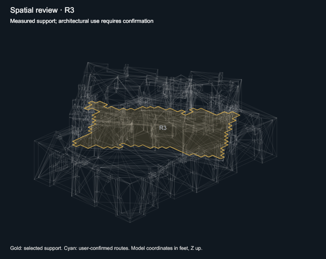
337 ft² at (-0.47, 0.32, 17.53) ft. Confirm whether this uncovered upper surface is an occupiable exterior loft or a roof. Review the proposed opening to R72.
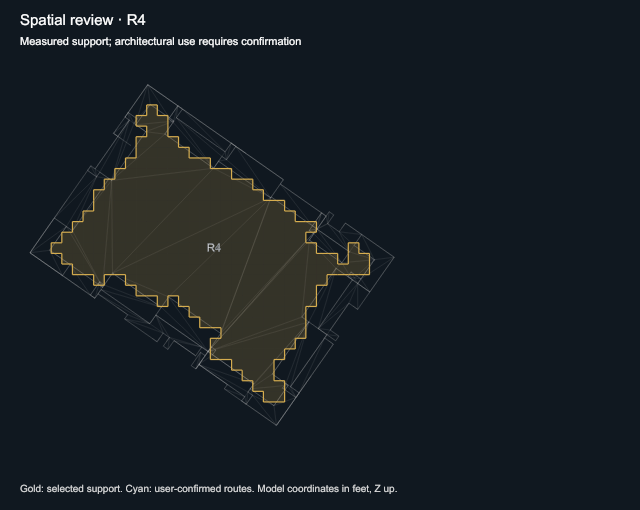
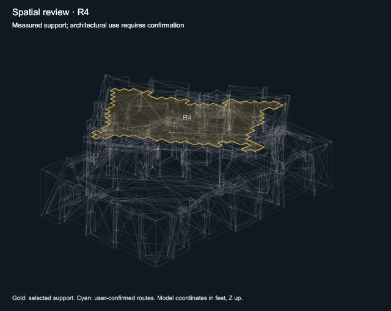
229 ft² at (-5.93, 3.01, 38.46) ft. Check whether the low 5.85 ft hit applies to the usable gathering area. Check the changes in level toward R9, R203 and R212 for landings and continuous approaches.
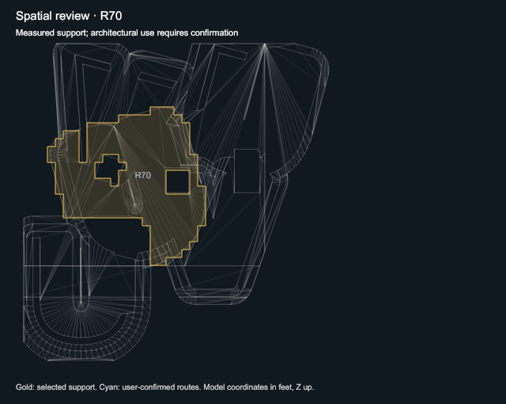
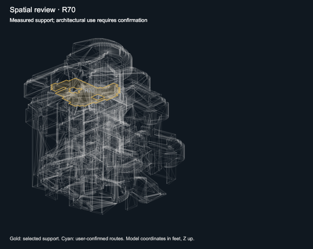
205 ft² at (9.09, -10.06, 9.16) ft. Confirm floor use and usable headroom. No passage to the rest of the model was detected here.
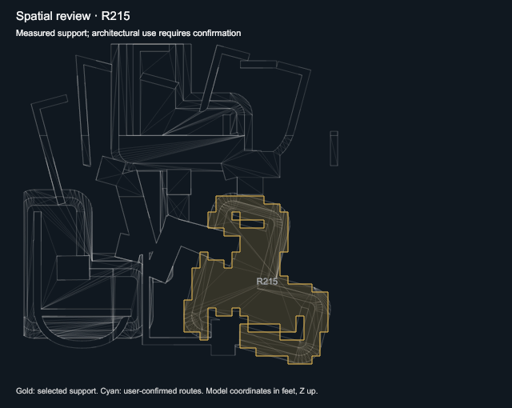
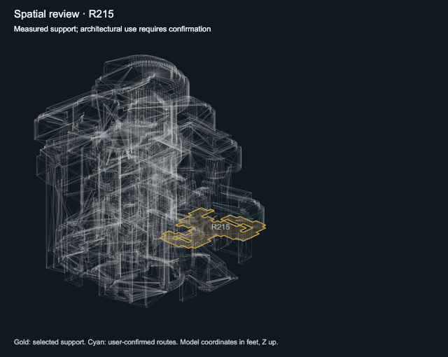
182 ft² at (-13.30, -8.57, 9.27) ft. Confirm floor use, overhead obstruction and an actual route into this lower region.
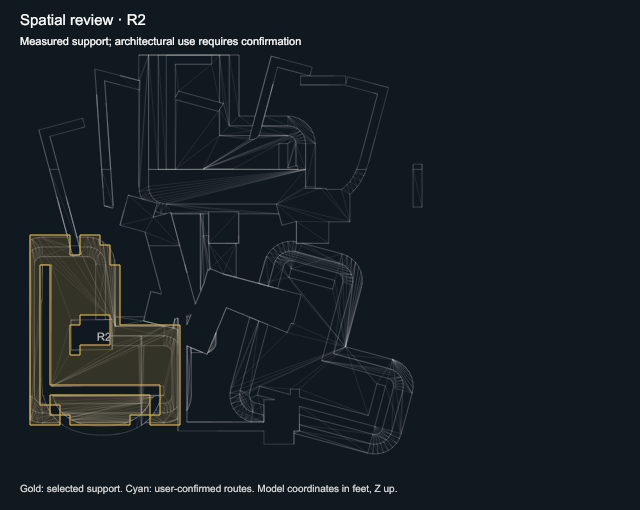
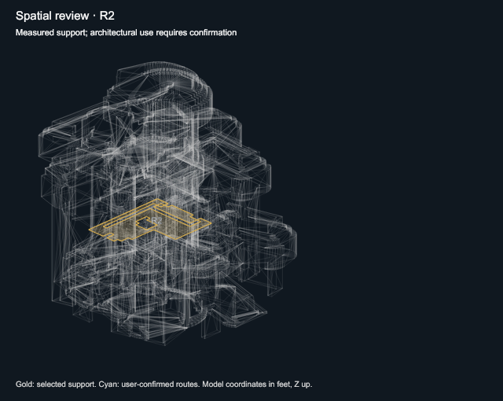
765 ft² at (-0.38, 0.42, 47.64) ft. Confirm roof versus occupied terrace. No overhead hit or approach establishes use here.
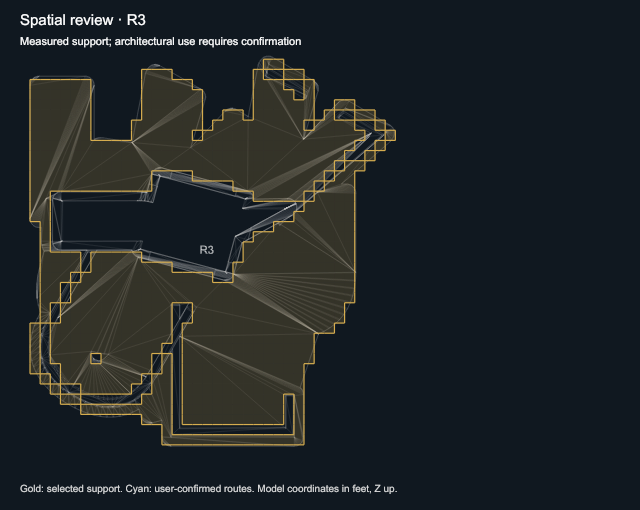
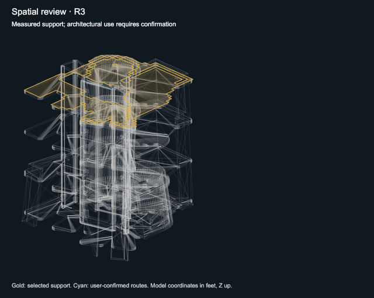
503 ft² at (-0.58, 4.57, 2.64) ft. Confirm usable floor extent around low overhead geometry. Inspect the proposed connections to R49, R73 and R93.
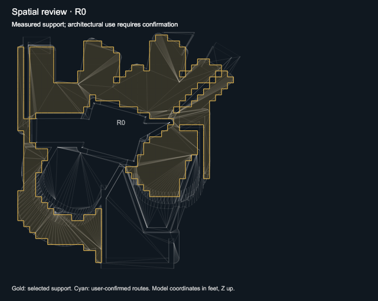
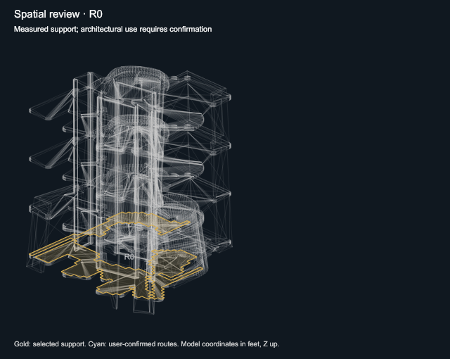
387 ft² at (2.56, -5.36, 32.64) ft. Check gathering use and unobstructed width. Confirm the opening to R56 and the transition to R95. Multiple samples of one opening can describe one approach.
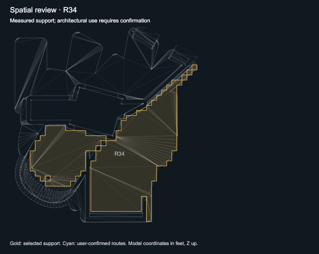
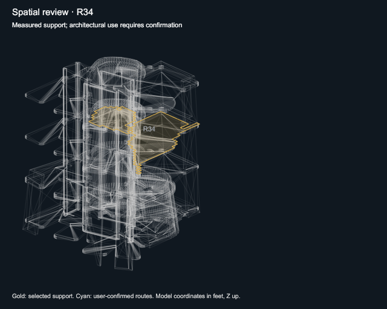